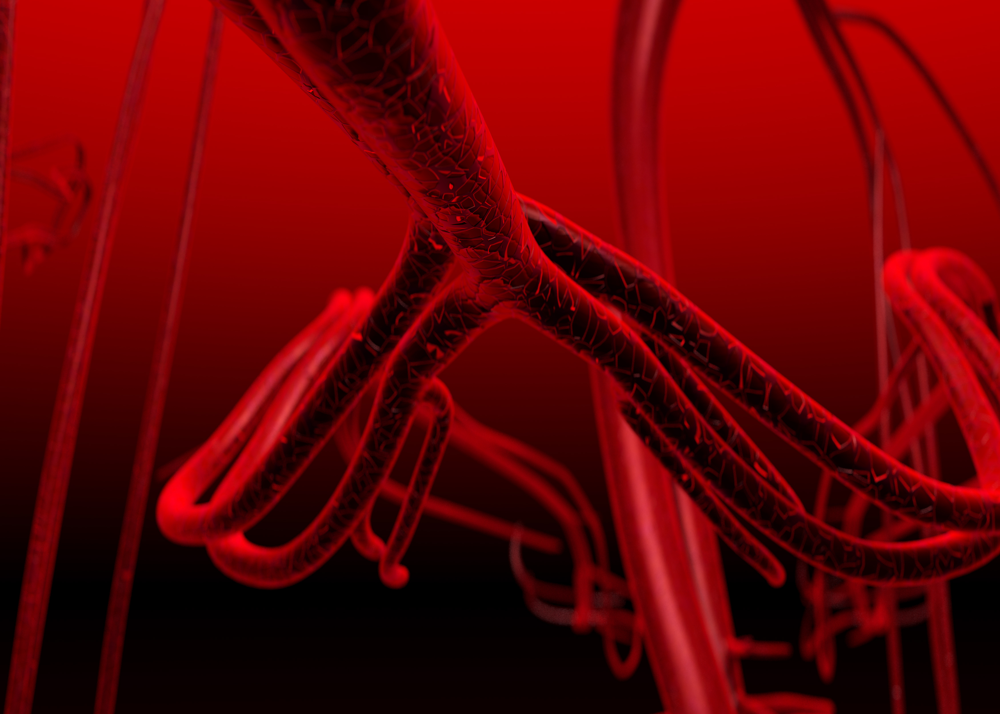

Roadblocks to a Blood Supply Highway
Anti-angiogenesis and cancer therapy
Carmen Christ
Fall 2007

Blood is vital for all tissues—even cancerous ones. Since oxygen
dissolved in blood can only diffuse 20-100 micrometers outside of blood
vessels, cells at the center of a cancerous tumor can become ischemic,
or undernourished due to a lack of oxygen. Clearly, this constraint
places a physical limit on the size, and thus the danger, of tumors.
Unfortunately, cancers can readily evolve to overcome this barrier. In
fact, many tumors develop the ability to promote angiogenesis, the
formation of new blood vessels. But this ability presents a tantalizing
route for cancer treatment: if we can learn how to inhibit angiogenesis
of cancer cells, then we can effectively limit cancer growth.
Of course, angiogenesis is not limited to cancerous
cells and occurs regularly as we grow and as wounds heal. Angiogenesis
begins with the secretion of protein growth factors by cells lining a
damaged blood vessel. These growth factors bind to the endothelial
cells of a nearby vessel and signal these cells to produce enzymes.
These enzymes create holes in the basement membrane, a fibrous membrane
that separates endothelial cells from deeper layers of tissue. The
targeted endothelial cells proliferate and some of the progeny make
their way out of the holes and towards the site at which the growth
factor was released. Other enzymes, such as matrix metalloproteinases,
break up the tissue as the new endothelial cells come together,
allowing for new vessels to elongate and reach their destination.
Perhaps the most important growth factors involved
in cancer related angiogenesis are vascular endothelial growth factors
(VEGFs). VEGFs are dimeric glycoproteins that interact directly with
endothelial cell surface receptors. Usually, VEGF is only secreted
under extremely hypoxic situations. In a tumor, the mutation of the p53
tumor suppressor gene removes the inhibition to the production of VEGF,
allowing the cancer to recruit numerous endothelial cells and allowing
for an overall increase in the number of blood vessels perfusing the
cancer. The increase in circulating VEGF that accompanies this
so-called “angiogenic switch” can be used diagnostically. As Karen K.
Smith- McCune, MD, PhD, Department of Obstetrics, Gynecology and
Reproductive Sciences Cancer Research Institute at the University of
California, San Francisco notes, “It is possible to detect the VEGF
increase in the blood and in some cases the urine sample.” She
continues, “The increase is a warning sign so doctors know to perform a
full body CT scan to locate the site of the cancer.”
A potential avenue of cancer treatment would be to
block the cancer cells from producing VEGF. A drug that has proven
effective in accomplishing this is bevacizumab, popularly known as
Avastin®. Manufactured by Genentech, it is a monoclonal antibody that
binds and sequesters VEGF, preventing it from reaching its conjugate
receptor. The drug does not work alone and is administered with
chemotherapy. Elwyn Cabebe, MD, an Oncology Fellow under Heather
Wakelee, MD, at the Stanford University School of Medicine, says that
“the actual mechanism is unclear, but the current hypothesis is that
Avastin® allows for better chemotherapy delivery by helping reorganize
the tumor blood vessels.” The drug was first used in clinical trials in
1997 and received Food and Drug Administration (FDA) approval for the
treatment of colon cancer in February 2004, making it the first
anti-angiogenesis drug to be approved. On October 12, 2006, the FDA
further approved Avastin® “for initial systemic treatment of patients
with unresectable, locally advanced, recurrent or metastatic,
non-squamous, non-small cell lung cancer.”